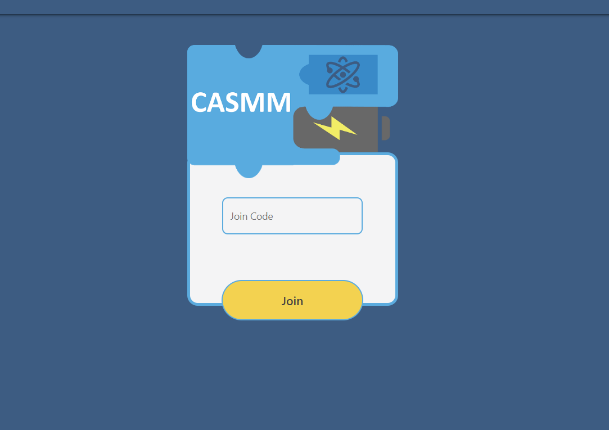

Improved the UX/UI design of the student workspace with the application CASMM (Computing and Science Modeling through Machinery), a project from my CEN3031 course.
View Project

Improved the UX/UI design of the student workspace with the application CASMM (Computing and Science Modeling through Machinery), a project from my CEN3031 course.